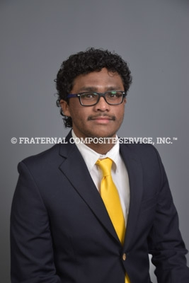
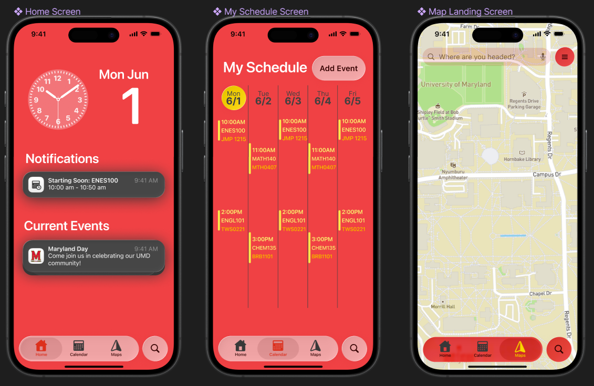
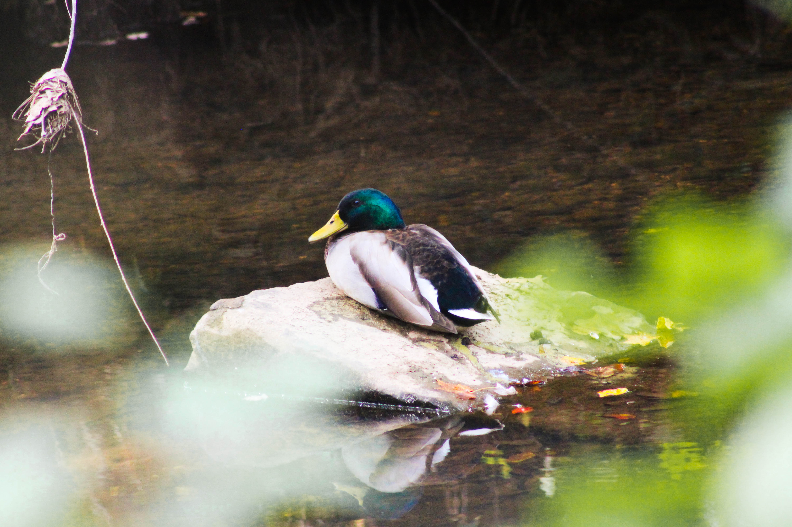
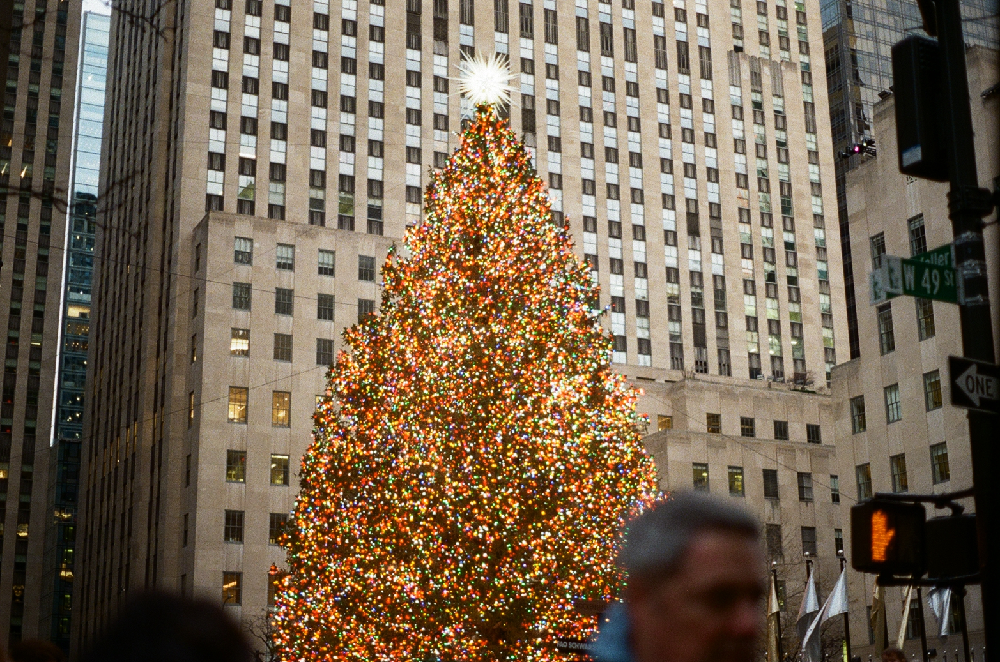
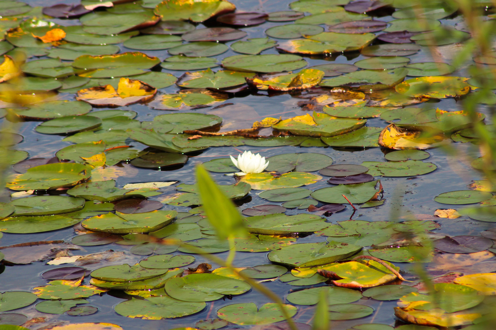

Hello.
I'm Alex Yogiaveetil

Welcome to my Portfolio.
Welcome to my professional portfolio. This collection showcases my work across engineering, design, technology, and photography—ranging from hands-on projects and technical reports to creative prototypes, research studies, and visual storytelling. Each section highlights not only what I built, analyzed, or captured, but also the skills, tools, and thought processes behind it. My goal is to give you a clear view of how I approach complex challenges with creativity, precision, and curiosity.
Keep scrolling to explore. Use the navigation bar above to view my resume, projects, and photography. This site highlights selected work across engineering, design, UX, and visual media, offering insight into my interests, tools, and problem-solving approach.
Check out a few of my recent projects.

Campus Navigation App Project
I worked on a UX project focused on designing a campus navigation app to help students easily find their way to classes and key locations through intuitive, accessibility-focused design and real-world user testing.
Learn More
Over Terrain Vehicle Project
As a part of the Intro to Engineering Design course, I collaborated with a group of eight students to design, build, and test an autonomous over terrain vehicle on a budget of $320 over three months.
Learn MorePhotography
A small selection of photos I’ve taken over the past few years.




